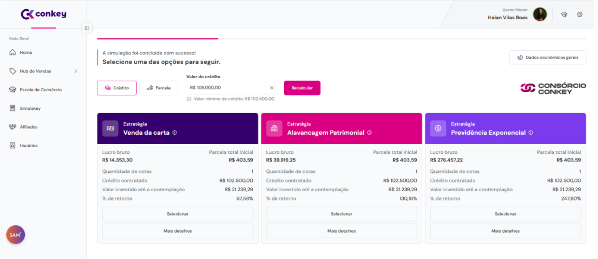
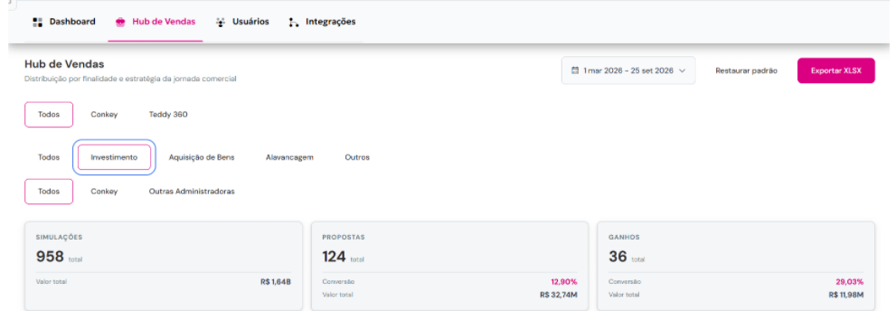

O mercado
O consórcio vive o melhor momento da sua história no Brasil. Em 2025, o sistema passou pela primeira vez de 12 milhões de participantes ativos, vendeu 5,16 milhões de cotas (15% a mais que em 2024) e somou R$ 500 bilhões em créditos comercializados, alta de 32%. De janeiro a maio de 2026, foram mais 2,36 milhões de adesões, 14% acima do mesmo período do ano anterior.
Junto com o volume, mudou o discurso: o consórcio passou a ser apresentado também como ferramenta de planejamento financeiro, e não só como forma de comprar um bem.
Fontes: ABAC, Sistema de Consórcios em dezembro de 2025 e Sistema de Consórcios em maio de 2026.
Contexto
A empresa já tinha forte atuação em educação sobre consórcio e decidiu ampliar o portfólio com uma nova modalidade: Consórcio como Investimento.
O desafio é que esse produto só faz sentido para quem entende contemplação, lances, crédito e regras do grupo. Uma tela de simulação comum não resolvia.
O problema
O mercado já vendia consórcio. O desafio era vender conhecimento suficiente para que a pessoa entendesse o que estava contratando.
A jornada tradicional seguia uma lógica simples: escolher carta, escolher prazo, ver parcela, enviar proposta. Para o novo produto, cliente e vendedor precisavam responder perguntas que essa jornada não respondia:
- Qual carta faz sentido para o meu objetivo, e qual parcela consigo assumir?
- Como funciona a contemplação, e quanto tempo pode levar?
- O que acontece se eu ofertar um lance? Qual percentual faz sentido?
- Como cada estratégia muda o resultado, e qual o impacto do lance no crédito que recebo?
O insight
O problema não estava na falta de funcionalidades. Estava na falta de contexto para interpretar as informações. O usuário via uma carta e uma parcela, mas não entendia o comportamento daquela escolha.
A proposta mudou de "vamos criar uma calculadora de consórcio" para "vamos criar uma ferramenta que ajude a entender e comparar estratégias".
A solução
A jornada passou a juntar educação, simulação e análise, em vez de terminar na parcela:
- Simulação por crédito ou por parcela, partindo do que o cliente sabe responder.
- Estratégias comparadas lado a lado, cada uma com resultado estimado, valor investido até a contemplação e percentual de retorno.
- Expectativa de contemplação a partir de dados históricos dos grupos, em vez de prometer uma data.
- Lances explicados: o lance embutido, por exemplo, usa parte da própria carta e reduz o crédito líquido. A tela mostra esse efeito antes da decisão.

O que existe por trás de uma simulação
Uma tela que parece simples esconde uma árvore de regras. Cada combinação precisava estar certa na tela, na API e no documento gerado.
Minha atuação
Atuei conectando Produto, Negócio, Desenvolvimento e Qualidade, principalmente na tradução das regras do mercado de consórcio para uma experiência digital compreensível e validável.
- Produto: entendimento do problema, necessidades de cliente e vendedor, definição da jornada, regras de negócio, cenários e critérios de aceite, discussão de alternativas de solução.
- Negócio: regras das administradoras, análise das estratégias de lance, comportamento de contemplação, alinhamento com stakeholders.
- Qualidade: análise de riscos, validação dos cálculos, testes funcionais, exploratórios e de cenários extremos, validação de integrações e conferência entre tela, cálculo e documentos.
6 meses depois do lançamento
De março a setembro de 2026, considerando só a finalidade Investimento no painel de vendas:
Quase 3 em cada 10 propostas viraram contrato, num produto que o cliente precisava entender antes de comprar. É o sinal de que a jornada fez o trabalho de explicar: quem chegava à proposta já sabia o que estava contratando.

O que aprendi
Em produto financeiro, a parte difícil não é a tela, é a regra. E o cliente não compra o que não entende. Colocar o conhecimento dentro da jornada foi o que transformou uma calculadora em uma ferramenta de decisão.
O desafio não era colocar o consórcio na tela. Era colocar dentro da jornada o conhecimento necessário para tomar uma decisão.